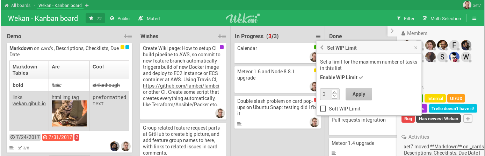

Feature Requests and Bugs
Vanila Chat
Freenode IRC #wekan
Twitter
Docs
Blog
Commercial Support
Hall of Fame
The
open-source
Trello-like kanban.
Features
Roadmap
Try Standalone version (read-only)
Try on Sandstorm
Download
(v0.89)
Loading chart...
